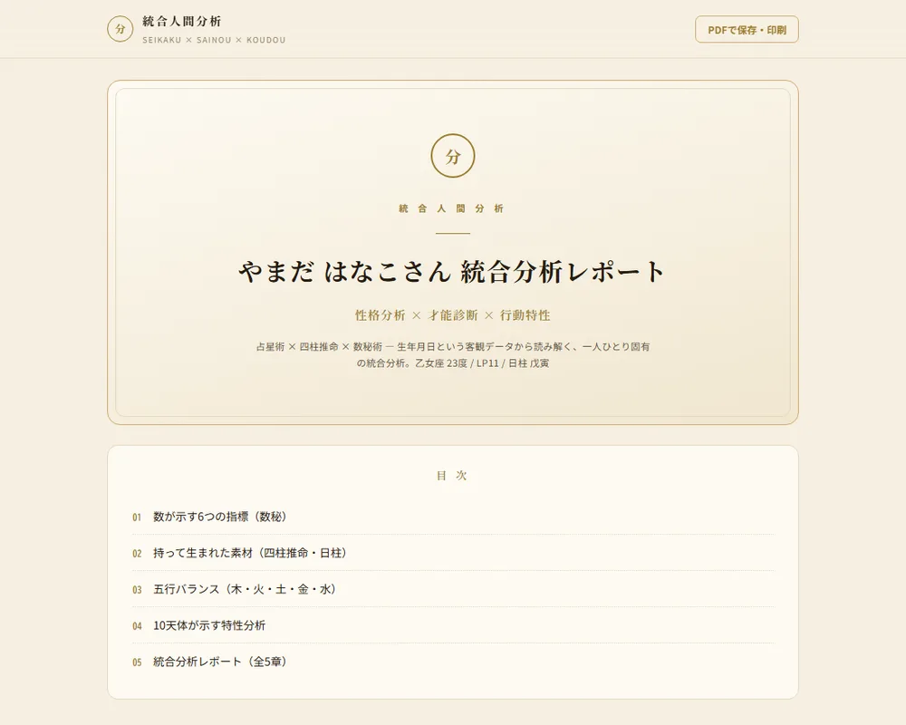

三星鑑（さんせいかん）は、占星術・四柱推命・数秘術という3つの分析軸を統合し、あなたの本質・才能・行動のクセを、できるだけ具体的な言葉に翻訳する ―― ひとりの作り手による、人間分析の取り組みです。
これは、占いではない。
あなたという人の、設計図だ。
性格診断の多くは、あなた自身の「自己申告」に答えを頼ります。だから、その日の気分や「こうありたい自分」でブレてしまう。三星鑑が手がかりにするのは、生年月日という、一生変わらない客観データだけ。だから結果は誰に対しても一貫し、当たる・当たらないではなく、あなたの取扱説明書として、静かに役に立ちます。
だから三星鑑は、占星術・四柱推命・数秘術を「占い」ではなく、生年月日から導かれる客観的なデータ群として扱い、3つが重なる部分を読み解いて精度を上げます。
生年月日を入れるだけ。あなたの「ライフパス（本質の指標）」を、その場で算出します。三星鑑が扱う数十の指標のうち、ほんの入り口の一つです。
「結局、私には何が書かれるの?」 ―― その答えの空気感を、実際のレポートの冒頭でお見せします。

あなたは「視野の広い完成者」というテーマを生きる人です。物事を細部まで見渡し、全体の調和を整えずにはいられない ―― その丁寧さが、あなたの核にあります。
生まれ持った素材は、四柱推命でいう「甲（大きな樹）」。空へ向かって一直線に伸びる大樹のような人です。正義感が強く、曲がったことが苦手。誰よりも真っ直ぐに、自分の信じる方へ向かう凛とした強さを持っています。
一方で、その真っ直ぐさは時に「なぜ周りは妥協できるのだろう」という小さな孤独にもなります。けれどそれは弱さではなく、あなたが質を落とせない人だという証拠で……
レポートに、聴きたい回の音声解説を組み合わせられます。あなたの分析を、二人のパーソナリティ（分析役と聞き手）が語り合う番組として ―― 通勤中でも、家事をしながらでも、自分という人を"聴いて"理解できます。
PDFレポートに解説音声をつけたコースも、お選びいただけます。全体像はレポートで、気になるテーマは完結回で深掘り ―― 読む／聴くの二段で、自分という人をより立体的に。
三星鑑はまだリリース前です。正直にお伝えすると、今の時点で「お客様の声」と呼べるものはまだありません。これから一つずつ、実績を積んでいきたいと考えています。
正直に書きます。私は一度、自分の夢をあきらめた人間です。
学生の頃、起業したいという夢がありました。でも「自分の中にあるものを、具体的な形にできない」―― その感覚に行き詰まって、一度あきらめました。
それから年月が経って、あらためて思ったんです。人が悩むのは、能力が足りないからではなく、自分の取扱説明書を持っていないからじゃないか、と。自分がどんな素材でできていて、何が得意で、どこでつまずきやすいのか。それが言葉になっているだけで、人生はずいぶん歩きやすくなる。
三星鑑は、占いではありません。生年月日という動かないデータを手がかりに、その人の設計図を、できるだけ具体的な言葉に翻訳する試みです。かつて「形にできなかった」私が、今度こそ形にしたかったもの。それが、このツールです。
まだ準備の途中ですが、一人ひとりに丁寧に向き合うつもりで作っています。よかったら、その過程からのぞいてみてください。
三星鑑は、一人ひとりに丁寧に向き合うため、いまは少人数で準備を進めています。先行登録された方には、販売を始めるときのお知らせを、いちばん先にお届けします。
三星鑑の統合レポートは、いま販売に向けて準備を進めています。販売を始める時期が決まりましたら、ご登録いただいた方へ最初にお知らせします。
※ この時点でのお申し込み・お支払いはありません。お知らせをお送りするだけです。
※ 配信はいつでも停止できます。
※ ご登録のアドレスは、販売を始めるときのお知らせのためだけに使います。